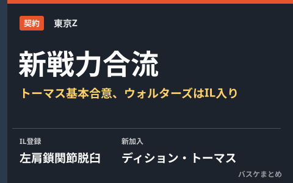

東京Z、ウォルターズが左肩負傷でIL入り 新戦力ディション・トーマスと基本合意

B.ONE東地区のアースフレンズ東京Zは10月16日、ブランドン・ウォルターズ選手を左肩鎖関節脱臼でインジュアリーリスト（IL）に登録したことと、ディション・トーマス選手との2026-27シーズン選手契約が基本合意に至ったことを発表しました。トーマス選手はウォルターズ選手と入れ替わる形でロスターに加わる見込みで、飯田タッド龍彦GMはフィジカルを生かして攻守に貢献できる選手だと期待を寄せています。
ウォルターズが試合中に負傷、左肩鎖関節脱臼で30日間登録不可
球団の公式発表によると、ウォルターズ選手は10月15日付でILに登録されました。公示された事由は左肩鎖関節脱臼で、規定により30日間は登録に戻れません。ウォルターズ選手は今季これまでに5試合に出場していました。
| 項目 | 内容 |
|---|---|
| IL登録選手 | ブランドン・ウォルターズ |
| 公示事由 | 左肩鎖関節脱臼 |
| 登録日 | 2026年10月15日付 |
| 今季の出場試合数 | 5試合 |
新戦力ディション・トーマス、2026-27シーズン契約で基本合意
東京Zは同日、ディション・トーマス選手との2026-27シーズン選手契約が基本合意に至ったことも発表しました。トーマス選手は205cm・109kgのSF/PF、2000年1月1日生まれで背番号は2。カレッジはコロラド州立大学・モンタナ大学で、アルゼンチンやトルコのクラブでのプレー経験があり、直近は国内の3人制（3x3）チーム「Hachinohe Dime」に所属していました。
| 項目 | 内容 |
|---|---|
| 選手名 | ディション・トーマス |
| ポジション | SF / PF |
| 身長・体重 | 205cm・109kg |
| 直前の所属 | 3x3チーム「Hachinohe Dime」 |
飯田タッド龍彦GMはトーマス選手について、フィジカルを生かしたプレーで攻守に貢献できる選手だとコメントしています。発表はあくまで「基本合意」の段階で、正式な契約締結の発表は現時点では示されていません。
Q. トーマス選手はいつから出場できる？
A. 2026年10月16日時点では「基本合意」の発表であり、正式契約の締結や登録のタイミングは公式発表では示されていません。最新状況は東京Z公式サイトでご確認ください。
出典：バスケットボールキング「東京ZがウォルターズをIL登録…新戦力トーマスの獲得発表、GM期待「チームに貢献できる選手」」／アースフレンズ東京Z公式「ブランドン・ウォルターズ選手 インジュアリーリスト登録のお知らせ」／アースフレンズ東京Z公式「ディション・トーマス選手（新規）基本合意のお知らせ」ほか
https://basketballking.jp/news/japan/20261016/637991.html
https://eftokyo-z.jp/news/261015-01
https://eftokyo-z.jp/news/261016-1